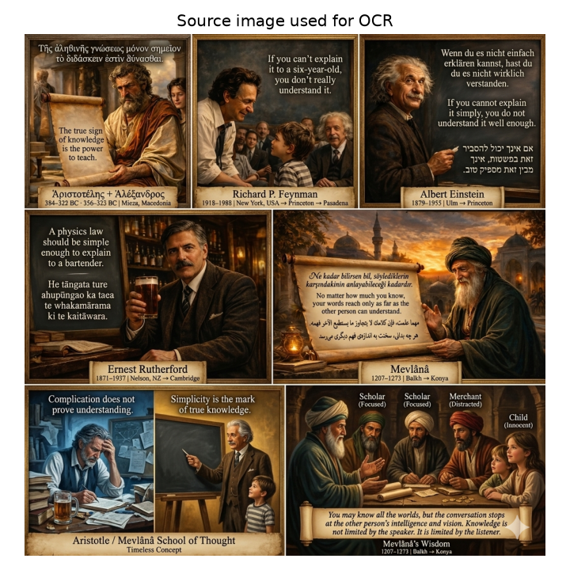

Compare Corpus Chunking Strategies on OCR Text#
This example asks one focused question:
How do different chunking strategies divide the same OCR-extracted text?
The source image contains multilingual text. OCR is performed once and the same extracted text is then passed to every chunker, so the comparison is not confounded by repeated OCR runs or CSV export behavior.
The executed comparison uses portable Corpus backends:
WordChunkerby document,WordChunkerby sentence,SentenceChunkerwith the REGEX backend,FixedWindowChunkerby characters,FixedWindowChunkerby tokens,SemanticChunkerwith the MORPHOLOGICAL backend.
Two NLTK-enhanced variants are shown separately and run only when NLTK and the required local NLTK data resources are already installed. No example in this file downloads optional data automatically.
If OCR capability is unavailable, the OCR-dependent comparison is reported as
SKIP and the source image is still displayed. A missing optional
dependency is not treated as a Corpus defect.
What to look for#
The summary near the end compares:
number of chunks,
average/minimum/maximum chunk size,
a bounded sample,
the intended use case of each strategy.
This makes the example a decision guide rather than a sequence of unrelated configuration snippets.
# Authors: The scikit-plots developers
# SPDX-License-Identifier: BSD-3-Clause
from __future__ import annotations
import os
import importlib.util
import shutil
from pathlib import Path
from statistics import mean
import matplotlib.image as mpimg
import matplotlib.pyplot as plt
from scikitplot.corpus import (
DocumentReader,
FixedWindowChunker,
FixedWindowChunkerConfig,
LemmatizationBackend,
MultilangConfig,
SemanticBackend,
SemanticChunker,
SemanticChunkerConfig,
SentenceBackend,
SentenceChunker,
SentenceChunkerConfig,
StemmingBackend,
StopwordSource,
TokenizerBackend,
WindowUnit,
WordChunker,
WordChunkerConfig,
)
# os.environ["SCIKITPLOT_GALLERY_RUN_ASR"] = "1"
# os.environ["SCIKITPLOT_CORPUS_ALLOW_DOWNLOADS"] = "1"
_RUN_ASR = os.environ.get("SCIKITPLOT_GALLERY_RUN_ASR", "1").strip().lower() in {
"1",
"true",
"yes",
"on",
}
_SCIKITPLOT_CORPUS_ALLOW_DOWNLOADS = os.getenv("SCIKITPLOT_CORPUS_ALLOW_DOWNLOADS", "1").strip().lower() in {
"1",
"true",
"yes",
"on",
}
Resolve the gallery asset#
Sphinx-Gallery may execute examples in a generated context where __file__
is not available. The fallback keeps the script usable from notebooks and
direct Python sessions without changing the caller’s working directory.
def _resolve_example_dir() -> Path:
"""Resolve the example directory across script and gallery runtimes."""
file = globals().get("__file__")
if file:
return Path(file).resolve().parent
return Path.cwd().resolve()
_EXAMPLE_DIR = _resolve_example_dir()
_DATA_DIR = _EXAMPLE_DIR / "data"
_IMAGE_PATH = _DATA_DIR / "echo_of_the_wise" / "AI_Generated_Image_1ix.png"
Optional-capability preflight#
Optional functionality is checked before executing that scenario.
The rule used by this gallery is:
missing optional package/resource/native capability → SKIP
Unexpected failures after a successful preflight are allowed to propagate, because they may indicate a real API, environment, or implementation defect.
def _probe_tesseract() -> tuple[bool, str]:
"""Return whether the default ImageReader OCR path can be attempted."""
if not _IMAGE_PATH.exists():
return False, f"gallery asset is missing: {_IMAGE_PATH}"
if importlib.util.find_spec("PIL") is None:
return False, "Pillow is not installed"
if importlib.util.find_spec("pytesseract") is None:
return False, "pytesseract is not installed"
if shutil.which("tesseract") is None:
return False, "the Tesseract executable is not available on PATH"
return True, "pytesseract + Tesseract available"
def _probe_nltk(*resource_paths: str) -> tuple[bool, str]:
"""Check NLTK and local data resources without downloading anything."""
if importlib.util.find_spec("nltk") is None:
return False, "NLTK is not installed"
try:
import nltk
except ImportError:
return False, "NLTK could not be imported"
missing: list[str] = []
for resource_path in resource_paths:
try:
nltk.data.find(resource_path)
except LookupError:
missing.append(resource_path)
if missing and not _SCIKITPLOT_CORPUS_ALLOW_DOWNLOADS:
return False, "missing local NLTK resources: " + ", ".join(missing)
return True, "NLTK resources available"
Extract OCR text once#
OCR belongs to the reader layer; chunking happens after text exists. Performing OCR once makes every strategy below consume exactly the same source text and avoids repeating an expensive optional operation.
ocr_ready, ocr_reason = _probe_tesseract()
ocr_documents = ()
ocr_text: str | None = None
if not ocr_ready:
print(f"[SKIP] OCR extraction: {ocr_reason}")
print("[SKIP] Chunking comparison requires OCR text and is not executed.")
else:
reader = DocumentReader.create(_IMAGE_PATH)
ocr_documents = tuple(reader.get_documents())
if not ocr_documents:
print("[SKIP] OCR produced no CorpusDocument evidence.")
else:
ocr_text = "\n\n".join(
doc.text for doc in ocr_documents if doc.text.strip()
)
if not ocr_text.strip():
ocr_text = None
print("[SKIP] OCR produced documents but no usable text.")
else:
confidences = [
doc.confidence
for doc in ocr_documents
if doc.confidence is not None
]
print(f"OCR documents: {len(ocr_documents)}")
print(f"OCR characters: {len(ocr_text):,}")
if confidences:
print(f"Mean OCR confidence: {mean(confidences):.3f}")
print("OCR preview:")
print(ocr_text[:500])
OCR documents: 1
OCR characters: 1,300
Mean OCR confidence: 0.637
OCR preview:
ire uursacesced Caraga io
10 Bi6doKew 8 Erna monet) 1b / aoe Maa ETT
RCO RSP eo ere
Memmnminsane(s)
erklaren kannst, hast du
Creerona eats
Brome ccrlhy | |
Petesercne | verstanden.
>
If you cannot explain
» Sas ONAN Co oiag
understand it well enough.
ge VIDA ND TRON
Sa eas
aE Nia)
‘ApiotoréAnc + AASEavSp0¢ , Richard P. Feynman j Albert Einstein
384-322 BC - 356-323 BC | Mieza, Macedonia 1918-1988 | New York, USA — Princeton — Pasadena 99-
1. Word chunker — one document-level lexical chunk#
This portable configuration uses the built-in SIMPLE tokenizer and disables optional stemming/lemmatization resources. It is useful when the entire document should share one lexical feature space.
result_word_doc = _run_strategy(
"Word / document",
WordChunker(
WordChunkerConfig(
chunk_by="document",
tokenizer=TokenizerBackend.SIMPLE,
stemmer=StemmingBackend.NONE,
lemmatizer=LemmatizationBackend.NONE,
stopwords=StopwordSource.NONE,
lowercase=True,
remove_punctuation=False,
min_token_length=2,
ngram_range=(1, 1),
)
),
use_case="whole-document lexical preprocessing",
)
Word / document
---------------
chunks: 1
chars/chunk: avg=1039.0, min=1039, max=1039
sample: 'ire uursacesced caraga io 10 bi6dokew erna monet 1b aoe maa ett rco rsp eo ere memmnminsanes erklaren kannst hast du creerona eats brome ccrlhy petesercne verstanden if you cannot explain sas onan co oiag understand it well enough ge vida n'
2. Word chunker — sentence-sized lexical chunks#
chunk_by="sentence" keeps lexical processing while dividing the document
into smaller sentence-like units. The internal sentence split uses the
portable REGEX path for this configuration.
result_word_sent = _run_strategy(
"Word / sentence",
WordChunker(
WordChunkerConfig(
chunk_by="sentence",
tokenizer=TokenizerBackend.SIMPLE,
stemmer=StemmingBackend.NONE,
lemmatizer=LemmatizationBackend.NONE,
stopwords=StopwordSource.NONE,
lowercase=True,
remove_punctuation=False,
min_token_length=2,
ngram_range=(1, 1),
)
),
use_case="lexical features per sentence-like unit",
)
Word / sentence
---------------
chunks: 5
chars/chunk: avg=207.0, min=29, max=639
sample: 'ire uursacesced caraga io 10 bi6dokew erna monet 1b aoe maa ett rco rsp eo ere memmnminsanes erklaren kannst hast du creerona eats brome ccrlhy petesercne verstanden if you cannot explain sas onan co oiag understand it well enough ge vida n'
3. Sentence chunker — REGEX backend#
This is the portable default sentence backend. It preserves natural textual boundaries without requiring NLTK data or a spaCy model.
result_sentence_regex = _run_strategy(
"Sentence / REGEX",
SentenceChunker(
SentenceChunkerConfig(
backend=SentenceBackend.REGEX,
strip_whitespace=True,
include_offsets=True,
)
),
use_case="natural sentence boundaries with minimal dependencies",
)
Sentence / REGEX
----------------
chunks: 5
chars/chunk: avg=256.8, min=30, max=801
sample: 'ire uursacesced Caraga io\n10 Bi6doKew 8 Erna monet) 1b / aoe Maa ETT\nRCO RSP eo ere\n\nMemmnminsane(s)\nerklaren kannst, hast du\nCreerona eats\n\n \n \n \n \n \n \n \n \n \n \n \n \n\n \n\nBrome ccrlhy | |\n Petesercne | verstanden.\n>\nIf you cannot '
4. Fixed character windows#
Character windows provide deterministic size bounds and explicit overlap. They do not attempt to preserve linguistic boundaries.
result_fw_chars = _run_strategy(
"Fixed / characters",
FixedWindowChunker(
FixedWindowChunkerConfig(
unit=WindowUnit.CHARS,
window_size=512,
step_size=256,
min_length=10,
)
),
use_case="deterministic character-size limits with overlap",
)
Fixed / characters
------------------
chunks: 5
chars/chunk: avg=461.8, min=269, max=512
sample: 'ire uursacesced Caraga io\n10 Bi6doKew 8 Erna monet) 1b / aoe Maa ETT\nRCO RSP eo ere\n\nMemmnminsane(s)\nerklaren kannst, hast du\nCreerona eats\n\n \n \n \n \n \n \n \n \n \n \n \n \n\n \n\nBrome ccrlhy | |\n Petesercne | verstanden.\n>\nIf you cannot '
5. Fixed token windows#
Token windows are useful when downstream systems are constrained by token-oriented budgets. The Corpus implementation also has writing-system fallbacks for text where whitespace tokenization is not sufficient.
result_fw_tokens = _run_strategy(
"Fixed / tokens",
FixedWindowChunker(
FixedWindowChunkerConfig(
unit=WindowUnit.TOKENS,
window_size=64,
step_size=32,
min_length=10,
)
),
use_case="token-budget-like windows with deterministic overlap",
)
Fixed / tokens
--------------
chunks: 6
chars/chunk: avg=331.7, min=317, max=346
sample: 'ire uursacesced Caraga io 10 Bi6doKew 8 Erna monet) 1b / aoe Maa ETT RCO RSP eo ere Memmnminsane(s) erklaren kannst, hast du Creerona eats Brome ccrlhy | | Petesercne | verstanden. > If you cannot explain » Sas ONAN Co oiag understand it we'
6. Semantic chunking — morphological backend#
The MORPHOLOGICAL backend is the portable semantic path: it does not download a sentence-transformer model. Multilingual metadata is retained so the result can be inspected for writing-system and preprocessing information.
ml = MultilangConfig(
include_raw_text=True,
include_preprocessing_trace=True,
include_semantemes=True,
include_grapheme_counts=True,
include_script_spans=True,
)
result_semantic = _run_strategy(
"Semantic / morphological",
SemanticChunker(
SemanticChunkerConfig(
backend=SemanticBackend.MORPHOLOGICAL,
multilang_config=ml,
)
),
use_case="content-aware multilingual boundaries without a model download",
)
Semantic / morphological
------------------------
chunks: 217
chars/chunk: avg=4.4, min=1, max=15
sample: 'ire'
7. Optional NLTK sentence segmentation#
This is intentionally a separate capability scenario. It runs only when
NLTK and punkt_tab are already installed locally.
nltk_sentence_ready, nltk_sentence_reason = _probe_nltk(
"tokenizers/punkt_tab",
)
if not nltk_sentence_ready:
_record_skip(
"Sentence / NLTK",
"NLTK sentence segmentation when its local tokenizer data is available",
nltk_sentence_reason,
)
result_sentence_nltk = None
else:
result_sentence_nltk = _run_strategy(
"Sentence / NLTK",
SentenceChunker(
SentenceChunkerConfig(
backend=SentenceBackend.NLTK,
nltk_language="english",
strip_whitespace=True,
include_offsets=True,
)
),
use_case="NLTK sentence segmentation with pre-provisioned data",
)
Sentence / NLTK
---------------
chunks: 8
chars/chunk: avg=160.0, min=30, max=406
sample: 'ire uursacesced Caraga io\n10 Bi6doKew 8 Erna monet) 1b / aoe Maa ETT\nRCO RSP eo ere\n\nMemmnminsane(s)\nerklaren kannst, hast du\nCreerona eats\n\n \n \n \n \n \n \n \n \n \n \n \n \n\n \n\nBrome ccrlhy | |\n Petesercne | verstanden.'
8. Optional NLTK lexical analysis#
The original showcase also demonstrated NLTK tokenization, Porter stemming, and WordNet lemmatization. Those features are preserved here, but they are not allowed to turn a missing optional resource into a gallery failure.
nltk_word_ready, nltk_word_reason = _probe_nltk(
"tokenizers/punkt_tab",
"corpora/wordnet",
"corpora/omw-1.4",
)
if not nltk_word_ready:
_record_skip(
"Word / NLTK + WordNet",
"NLTK tokenization, Porter stemming, and WordNet lemmatization",
nltk_word_reason,
)
result_word_nltk = None
else:
result_word_nltk = _run_strategy(
"Word / NLTK + WordNet",
WordChunker(
WordChunkerConfig(
chunk_by="document",
tokenizer=TokenizerBackend.NLTK,
stemmer=StemmingBackend.PORTER,
lemmatizer=LemmatizationBackend.NLTK_WORDNET,
stopwords=StopwordSource.BUILTIN,
nltk_language="english",
lowercase=True,
remove_punctuation=False,
min_token_length=2,
ngram_range=(1, 1),
)
),
use_case="richer English lexical preprocessing with local NLTK data",
)
Word / NLTK + WordNet
---------------------
chunks: 1
chars/chunk: avg=875.0, min=875, max=875
sample: 'ire uursacesc caraga io 10 bi6dokew erna monet 1b aoe maa ett rco rsp eo ere memmnminsan erklaren kannst hast du creerona eat brome ccrlhi petesercn verstanden explain sa onan co oiag understand well enough ge vida nd tron sa ea ae nia apio'
Comparison summary#
The useful question is not “which chunker is best?” The strategies preserve different kinds of boundaries, so the correct choice depends on the downstream task.
print("\nChunking comparison")
print("=" * 108)
print(
f"{'strategy':26s} {'status':7s} {'chunks':>7s} "
f"{'avg':>8s} {'min':>7s} {'max':>7s} use case"
)
print("-" * 108)
for row in comparison_rows:
chunks = "-" if row["chunks"] is None else str(row["chunks"])
avg_chars = "-" if row["avg_chars"] is None else str(row["avg_chars"])
min_chars = "-" if row["min_chars"] is None else str(row["min_chars"])
max_chars = "-" if row["max_chars"] is None else str(row["max_chars"])
print(
f"{str(row['strategy']):26.26s} "
f"{str(row['status']):7s} "
f"{chunks:>7s} {avg_chars:>8s} {min_chars:>7s} {max_chars:>7s} "
f"{row['use_case']}"
)
print("\nDecision guide")
print("--------------")
print("Word/document → one lexical representation for the whole document")
print("Word/sentence → lexical features at sentence-like granularity")
print("Sentence → preserve natural language boundaries")
print("Fixed/characters → predictable character limits")
print("Fixed/tokens → token-budget-like windows")
print("Semantic → content-aware multilingual segmentation")
print("NLTK variants → richer optional English NLP when resources are present")
Chunking comparison
============================================================================================================
strategy status chunks avg min max use case
------------------------------------------------------------------------------------------------------------
Word / document OK 1 1039 1039 1039 whole-document lexical preprocessing
Word / sentence OK 5 207 29 639 lexical features per sentence-like unit
Sentence / REGEX OK 5 256.8 30 801 natural sentence boundaries with minimal dependencies
Fixed / characters OK 5 461.8 269 512 deterministic character-size limits with overlap
Fixed / tokens OK 6 331.7 317 346 token-budget-like windows with deterministic overlap
Semantic / morphological OK 217 4.4 1 15 content-aware multilingual boundaries without a model download
Sentence / NLTK OK 8 160 30 406 NLTK sentence segmentation with pre-provisioned data
Word / NLTK + WordNet OK 1 875 875 875 richer English lexical preprocessing with local NLTK data
Decision guide
--------------
Word/document → one lexical representation for the whole document
Word/sentence → lexical features at sentence-like granularity
Sentence → preserve natural language boundaries
Fixed/characters → predictable character limits
Fixed/tokens → token-budget-like windows
Semantic → content-aware multilingual segmentation
NLTK variants → richer optional English NLP when resources are present
Inspect multilingual semantic metadata#
Semantic/multilingual output can carry much richer metadata than a simple fixed window. Show only a bounded set of keys so the gallery stays readable.
if result_semantic is not None and result_semantic.chunks:
semantic_meta = result_semantic.chunks[0].metadata
print("\nSemantic chunk metadata keys:")
print(sorted(semantic_meta.keys())[:20])
Semantic chunk metadata keys:
['chunk_index', 'chunking_strategy', 'doc_id', 'layer2_strategy', 'multilang']
Display the OCR source image#
The image remains useful even when OCR capability is absent: the gallery can show exactly which source would have been processed and why the comparison was skipped.
print(f"\nSource image: {_IMAGE_PATH}")
if _IMAGE_PATH.exists():
plt.figure(figsize=(6, 6), dpi=120)
img = mpimg.imread(_IMAGE_PATH)
plt.imshow(img)
plt.axis("off")
plt.title("Source image used for OCR", fontsize=12)
plt.tight_layout()
plt.show()
else:
print(f"[SKIP] Source image is unavailable: {_IMAGE_PATH}")

Source image: /home/circleci/repo/galleries/examples/corpus/data/echo_of_the_wise/AI_Generated_Image_1ix.png
Takeaway#
Chunking is a downstream design decision, not an OCR decision.
A practical starting point is:
sentence boundaries when preserving readable units matters,
fixed windows when deterministic size limits matter,
semantic chunking when content-aware boundaries justify the extra work,
word chunking when lexical/token features are the primary output.
Optional NLP backends should be selected intentionally and pre-provisioned in reproducible CI/documentation environments.
Total running time of the script: (0 minutes 4.216 seconds)
Related examples


Build and Search a Real Hamlet Corpus with FluentCorpus